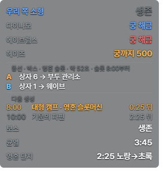
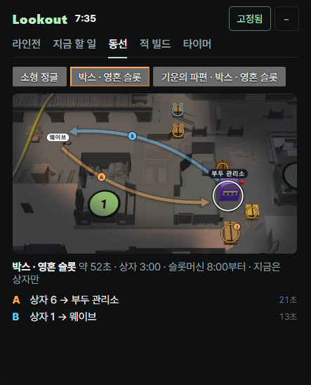

Deadlock을 하면서 옆에 두는 작은 메모장
게임 화면을 읽어서 지금 챙길 것만 왼쪽에 조용히 띄웁니다. 정글이 언제 다시 생기는지, 웨이브를 민 뒤 어디를 돌고 올지, 상대 궁극기가 열렸는지.
Windows용 받기 0.1.5 무료 · Windows · 게임은 창 모드 또는 테두리 없는 창 모드 · 바뀐 점


그 밖에
- 미니맵 위 정글 캠프 리스폰 타이머와 층 표시
- Tab을 누르면 적마다 궁극기 해금 여부, 팀 상성
- 상점을 열면 이번 적 팀을 상대로 살 만한 아이템
- 영웅 선택 화면에서 초상화마다 승률 · 픽률
- 2:00 소형 캠프처럼 생성 30초 전 시간 알림
- 레벨업까지 남은 영혼과 트루퍼 수, 다음 레벨에 궁극기가 열리는지
기본은 화면 인식이라 게임 파일을 건드리지 않습니다. 화면에 보이는 것만 이 PC 안에서 읽고, 게임 화면은 밖으로 보내지 않습니다. 더 정확하게 쓰고 싶으면 '게임 HUD 연동'을 따로 켤 수 있습니다. 게임 폴더에 모드 파일 1개를 넣고 gameinfo.gi에 3줄을 더하며(먼저 백업), 대시보드에서 언제든 뺄 수 있습니다. 어느 쪽도 게임 메모리를 읽지 않습니다. Valve와 관계없는 팬 제작 도구입니다.